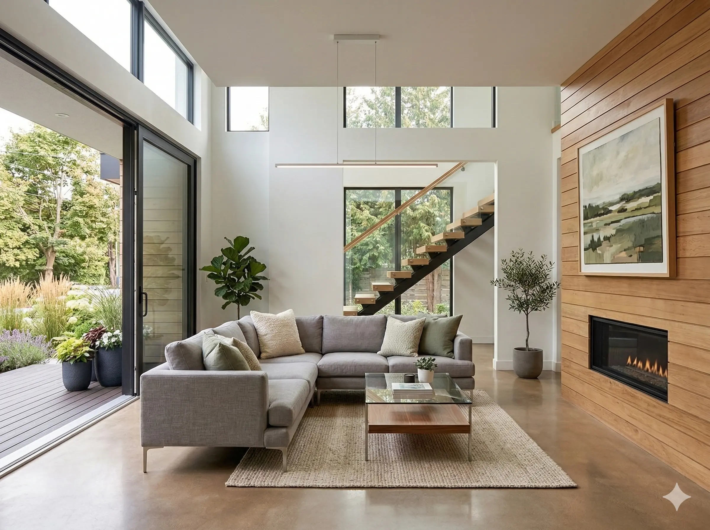
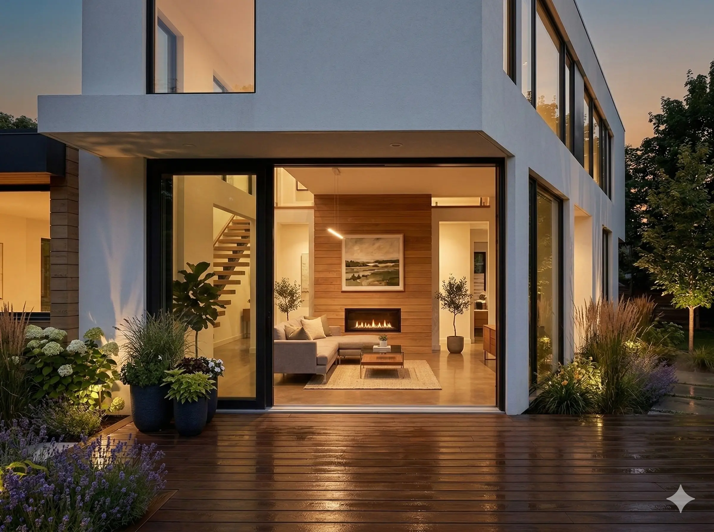
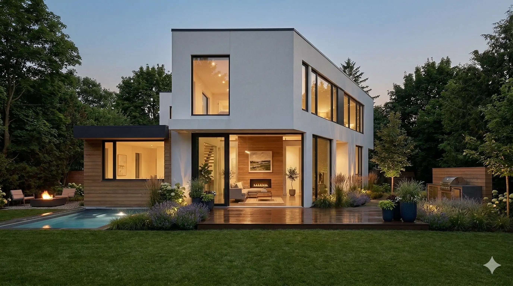
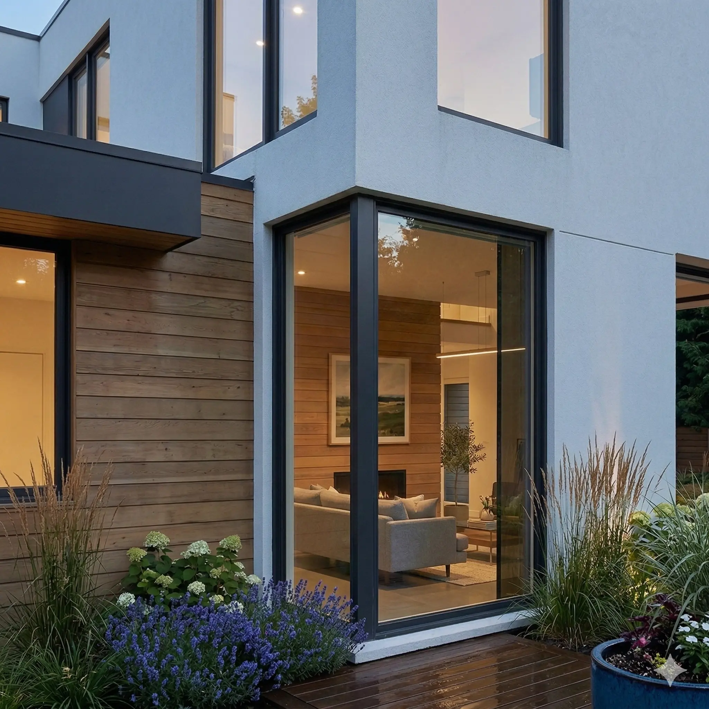

Residential House A
Location: Fictional Suburb, Wellington · Year: 2022
Overview
A modern single-family home with a clean white facade, large windows, and a considered relationship to the street. The design emphasises light and outdoor connection, with a living room that opens to the backyard and careful detailing around the entrance and window frames.
This is a placeholder project for testing. None of the imagery or awards are real.






Awards
- Regional Design Award, 2023
- Residential Excellence (Fake), 2022